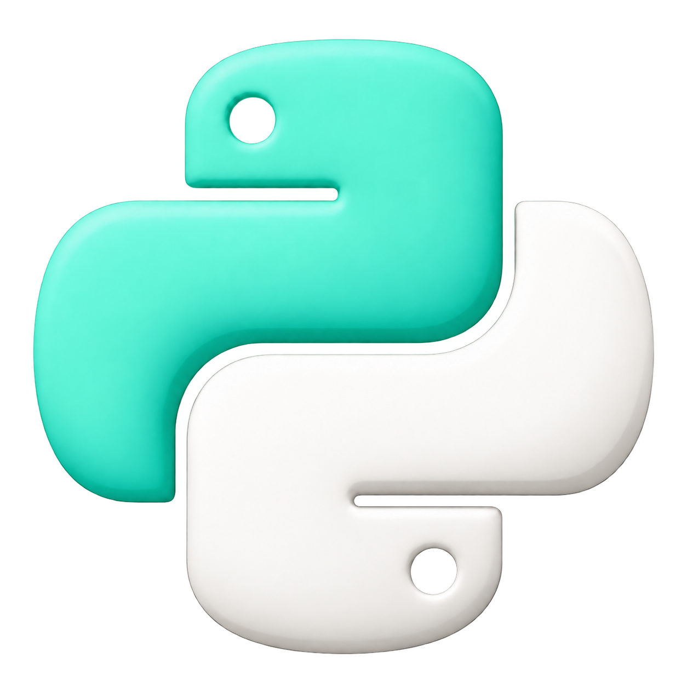
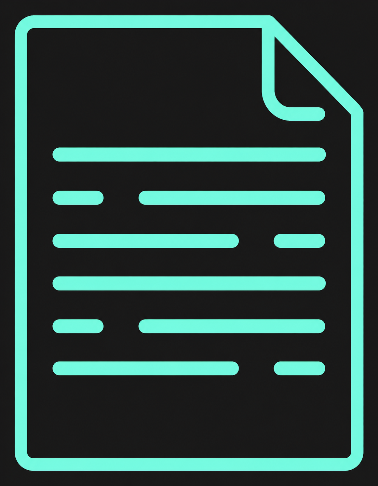
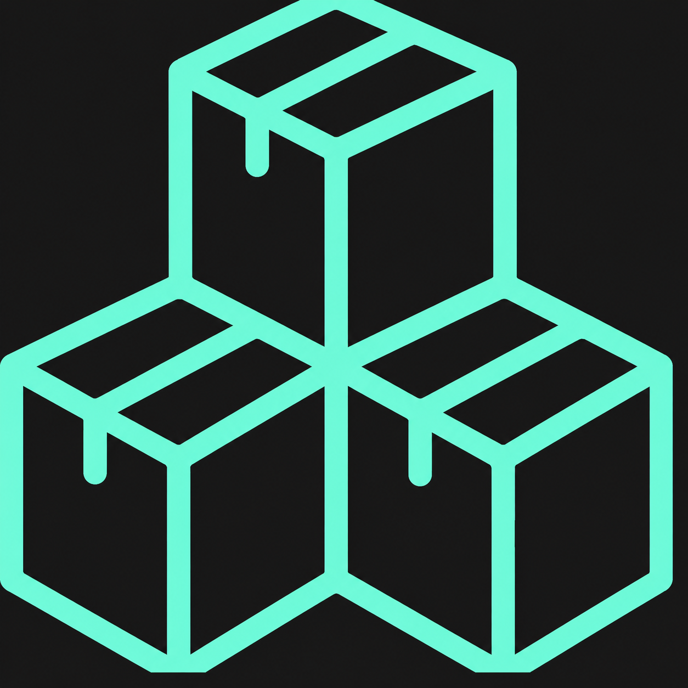

Sou estudante de Ciência da Computação no Insper, interessado em tecnologia e desenvolvimento de software. Estou no início da minha trajetória na área e busco transformar o que aprendo em projetos práticos, explorando novas tecnologias e desenvolvendo minhas habilidades como programador. Este portfólio reúne alguns dos projetos e experiências que fazem parte dessa evolução.
Sistema para cadastrar produtos, acompanhar quantidades e apoiar o controle de entradas e saídas do estoque.
Ver Projeto
Ferramenta em Python que processa textos e apresenta indicadores como palavras, caracteres e frases.
Ver Projeto
Aplicação para registrar despesas, visualizar categorias e acompanhar indicadores financeiros pessoais.
Ver Projeto